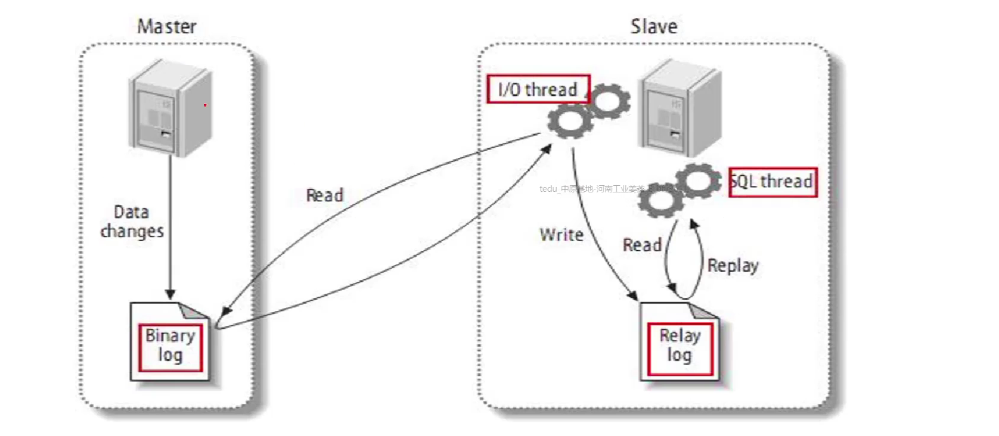

MySQL基础 数据库：存储数据的仓库
常见软件
主流操作系统： Unix、Linux、Windows
软件名
开源
跨平台
厂商
Oracle
否
是
甲骨文
MySQL
是
是
甲骨文
SOL Server
否
否
微软
DB2
否
是
IBM
Redis
是
是
开源软件
Memcached
是
是
开源软件
MongoDB
是
是
开源软件
专业术语
MySQL介绍 起源与发展
应用最广泛的开源数据库软件
-最早隶属于瑞典的MySQL AB公司
-2008年1月，MySQL AB被Sun收购
-2009年4月，Sun被Oracle收购
崭新的开源分支MariaDB
-为应付MySQL可能会闭源的风险而诞生
-由MySQL原作者Widenius主导开发
-与MySQL保持最大程度兼容
特点与应用
主要特点
-适用与中小规模、关系型数据库系统
-支持Linux、Unix、Windows等多种操作系统
-支持Python、Java、Perl、PHP等编程语言
典型应用环境
-LAMP平台，与Apache HTTP Server组合
-LNMP平台，与Nginx组合
官网地址：http://dev.mysql.com/downloads/mysql
安装MySQL软件、启动服务 1 2 3 4 5 6 7 8 [root@master ~] [root@master ~] [root@master ~] [root@master ~] [root@master ~]
通过yum安装 1 2 3 4 5 6 7 8 9 10 11 12 13 14 15 16 17 18 19 20 21 22 23 24 25 26 27 28 29 30 31 32 33 34 35 36 37 38 39 40 41 42 43 44 45 46 47 48 49 50 51 52 53 54 55 56 57 58 59 60 61 62 63 [root@master ~] [root@master ~] [root@master ~] NOTE: RUNNING ALL PARTS OF THIS SCRIPT IS RECOMMENDED FOR ALL MariaDB SERVERS IN PRODUCTION USE! PLEASE READ EACH STEP CAREFULLY! In order to log into MariaDB to secure it, we'll need the current password for the root user. If you' ve just installed MariaDB, andyou haven't set the root password yet, the password will be blank, so you should just press enter here. Enter current password for root (enter for none): #直接回车 OK, successfully used password, moving on... Setting the root password ensures that nobody can log into the MariaDB root user without the proper authorisation. Set root password? [Y/n] y #设置root密码 New password: 000000 Re-enter new password: 000000 Password updated successfully! Reloading privilege tables.. ... Success! By default, a MariaDB installation has an anonymous user, allowing anyone to log into MariaDB without having to have a user account created for them. This is intended only for testing, and to make the installation go a bit smoother. You should remove them before moving into a production environment. Remove anonymous users? [Y/n] y ... Success! Normally, root should only be allowed to connect from ' localhost'. This ensures that someone cannot guess at the root password from the network. Disallow root login remotely? [Y/n] n ... skipping. By default, MariaDB comes with a database named ' test ' that anyone can access. This is also intended only for testing, and should be removed before moving into a production environment. Remove test database and access to it? [Y/n] y - Dropping test database... ... Success! - Removing privileges on test database... ... Success! Reloading the privilege tables will ensure that all changes made so far will take effect immediately. Reload privilege tables now? [Y/n] y ... Success! Cleaning up... All done! If you' ve completed all of the above steps, your MariaDBinstallation should now be secure. Thanks for using MariaDB!
相关参数
文件
说明
/etc/my.cnf
主配置文件
/var/lib/mysql
数据库目录
默认端口号
3306
进程名
mysqld
传输协议
TCP
进程所有者
mysql
进程所属祖
mysql
错误日志文件
/var/log/mysqld.log
初始化配置
1 2 3 4 5 6 7 [root@master ~] 2017-04-18T07:29:27.643784Z 1 [Note] A temporary password is generated for root@localhost: mtoa>Av<p6Yk [root@master ~]
修改密码
具体操作如下：
-使用alter user命令修改登录密码
-新密码必须满足密码策略
-管理员root使用新密码连接
1 2 3 4 5 mysql> alter user root@"localhost" identified by "密码" ; [root@master ~]
修改密码策略
策略名称
验证方式
LOW（0）
长度
MENIUM（1）默认
长度，数字，小写/大写，特殊字符
STRONG（2）
长度，数字，小写/大写，特殊字符，字典文件
1 2 3 4 5 6 7 8 9 10 11 12 13 mysql> show variables like "%password%" ; mysql> set global validate_password_policy=0; mysql> set global validate_password_length=6; [root@master ~] [mysqld] validate_password_policy=0 varidate_password_length=6 :wq
数据库基础 连接方式
数据存储流程
客户端把数据存储到数据库服务器上的步骤
-连接数据库服务器
-创建数据库 #类似文件夹
-创建数据表 #类似文件
-插入数据 #类似文件内容
-断开连接
MySQL管理环境
SQL命令使用规则
-SQL命令不区分字母大小写（密码、变量值除外）
-每条SQL命令以 ; 结束
-默认命令不支持Tab键自动补齐
-\c 中止sql命令
SQL命令分类
常用的SQL命令分类
-管理数据库使用SQL（结构化查寻语言）
-DDL 数据定义语言 如：create、alter、drop
-DML 数据操作语言 如：insert、update、delete
-DCL 数据控制语言 如：grant、revoke
-DTL 数据事务语言 如：commit、rollback、savepoint
MySQL基本操作 库管理命令
1 2 3 4 5 mysql> create database DB1; Query OK, 1 row affected (0.00 sec) mysql> create database db1; Query OK, 1 row affected (0.00 sec)
表管理命令
1 2 3 4 5 mysql> crate table db1.test( name char(15), homeaddr char(20), ······ );
-desc 库名.表名 #查看表结构
-drop table 库名.表名 #删除表
1 2 3 4 5 6 7 8 9 10 11 mysql> desc db1.test; +----------+----------+------+-----+---------+-------+ | Field | Type | Null | Key | Default | Extra | +----------+----------+------+-----+---------+-------+ | name | char(15) | YES | | NULL | | | homeaddr | char(20) | YES | | NULL | | +----------+----------+------+-----+---------+-------+ 2 rows in set (0.00 sec) mysql> drop table db1.test; Query OK, 0 rows affected (0.03 sec)
记录管理命令
记录类似于文件里的行
-select * from 库名.表名; #查看表记录
-insert into 库名.表名 values(值列表); #插入表记录
-update 库名.表名 set 字段=值; #修改表记录
-delete from 表名; #删除表记录
1 2 3 4 5 6 7 8 9 10 11 12 13 14 15 16 17 18 19 20 21 22 23 24 25 26 27 28 29 30 31 32 33 34 35 36 37 38 39 40 mysql> insert into db1.test values("jim" ,"usa" ),("bob" ,"china" ); Query OK, 2 rows affected (0.00 sec) Records: 2 Duplicates: 0 Warnings: 0 mysql> select * from db1.test; +------+----------+ | name | homeaddr | +------+----------+ | jim | usa | | bob | china | +------+----------+ 2 rows in set (0.00 sec) mysql> update db1.test set homeaddr="beijing" where name="jim" ; Query OK, 1 row affected (0.01 sec) Rows matched: 1 Changed: 1 Warnings: 0 mysql> select * from db1.test; +------+----------+ | name | homeaddr | +------+----------+ | jim | beijing | | bob | china | +------+----------+ 2 rows in set (0.00 sec) MariaDB [(none)]> delete from db1.test where name="jim" ; Query OK, 1 row affected (0.00 sec) MariaDB [(none)]> select * from db1.test; +------+----------+ | name | homeaddr | +------+----------+ | bob | china | +------+----------+ 1 row in set (0.00 sec)
数据类型 字符类型
1 2 3 4 5 6 7 8 9 10 11 12 13 14 15 16 17 18 19 20 21 22 23 24 25 26 27 28 29 30 31 32 33 34 mysql> desc db1.test; +----------+----------+------+-----+---------+-------+ | Field | Type | Null | Key | Default | Extra | +----------+----------+------+-----+---------+-------+ | name | char(15) | YES | | NULL | | | homeaddr | char(20) | YES | | NULL | | +----------+----------+------+-----+---------+-------+ 2 rows in set (0.00 sec) mysql> insert into db1.test values("abcdefghijklmnop" ,"usa" ); Query OK, 1 row affected, 1 warning (0.00 sec) mysql> insert into db1.test values("abcdefghijklmnopq" ,"usa" ); Query OK, 1 row affected, 1 warning (0.01 sec) mysql> insert into db1.test values("abcdefghijklmnopqrst" ,"usa" ); Query OK, 1 row affected, 1 warning (0.00 sec) mysql> insert into db1.test values("abcdefghijklmnopqrstuvwxyz" ,"usa" "); Query OK, 1 row affected, 1 warning (0.01 sec) MariaDB [(none)]> select * from db1.test; +-----------------+----------+ | name | homeaddr | +-----------------+----------+ | bob | china | | abcdefghijklmno | usa | | abcdefghijklmno | usa | | abcdefghijklmno | usa | | abcdefghijklmno | usa | +-----------------+----------+ 5 rows in set (0.00 sec)
变长varchar(字符个数) -按数据实际大小分配空间 #不会用空格补齐
-字符个数超出时，无法写入数据
大文本类型：text/blob -字符数大于65535时使用
数值类型
类型
名称
有符号范围
无符号范围
tinyint
微小整数
-128~127
0~255
smallint
小整数
-32768~32767
0~65535
mediumint
中整型
-223~223-1
0~224-1
int
大整型
-231~231-1
0~232-1
bigint
极大整型
-264~263-1
0~264-1
unsigned
使用无符号存储范围
存储有小数点的数
类型
名称
有符号范围
无符号范围
float
单精度
-3.402823466E+38 到 -1.175494351E-38
1.175494351E-38 到 3.402823466E+38
double
双精度
-1.7976931348623175E+308 到 -2.2250738585072014E-308
2.2250738585072014E-308 到 1.7976931348623157E+308
1.175494351E-38 = 1.175494351 / 1038
1.175494351E+38 = 1.175494351E38 = 1.175494351 * 1038
日期和时间类型 类型关键字
日期date
-范围：0001-01-01 ~ 9999-12-31
-格式：yyyymmdd 19491001
年year
-范围：1901-2155
-格式：yyyy 1998 2000
时间time
-格式 HHMMSS 221838
日期时间 datetime
-范围：1000-01-01 00:00:00 ~ 9999-12-31 23:59:59
-格式：yyyymmddhhmmss
日期时间 timestamp
-范围： 1970-01-01 00:00:00 ~ 2038-01-19 00:00:00
-格式：yyyymmddhhmmss
时间函数
类型
用途
curtime()
获取当前系统的时间
curdate()
获取当前系统的日期
now()
获取当前系统的日期和时间
year()
获取年
month()
获取月
day()
获取日
date()
获取日期
time()
获取时间
关于日期时间字段 -当未给timestamp字段赋值时，自动以当前系统时间赋值，而datetime值为NULL（空）
year类型 -要求使用4位数赋值
-当使用2位数赋值时：01~99
-0169视为 20012069
-7099视为 19071999
1 2 3 4 5 6 7 8 9 10 11 12 13 14 15 mysql> create table db1.test3( name char(20), ts timestamp(6), date datetime(6), yr year(20) ); Query OK, 0 rows affected, 1 warning (0.01 sec) mysql> insert into db1.test3(name,yr) values("bob" ,55); Query OK, 1 row affected (0.00 sec) mysql> select * from db1.test3; +------+----------------------------+------+------+ | name | ts | date | yr | +------+----------------------------+------+------+ | bob | 2023-03-11 19:44:35.292665 | NULL | 2055 | +------+----------------------------+------+------+ 1 row in set (0.00 sec)
枚举类型
enum 单选
-格式： 字段名 enum(值1，值2，值N)
-仅能在列表里选择一个值
set 多选
-格式：字段名 set(值1，值2，值N)
-在列表里选择一个或多个
1 2 3 4 5 6 7 8 9 10 11 12 13 14 mysql> create table db1.test5( name char(10), sex enum("boy" ,"girl" ,"" others"), likes set(" book"," tea"," ball"," game") ); Query OK, 0 rows affected (0.00 sec) mysql> insert into db1.test5 values(" bob"," boy"," book,tea,game"); Query OK, 1 row affected (0.00 sec) mysql> select * from db1.test5; +------+------+---------------+ | name | sex | likes | +------+------+---------------+ | bob | boy | book,tea,game | +------+------+---------------+ 1 row in set (0.01 sec)
约束条件，修改表结构 约束条件
1 2 3 4 5 6 7 8 mysql> desc db1.test; +----------+----------+------+-----+---------+-------+ | Field | Type | Null | Key | Default | Extra | +----------+----------+------+-----+---------+-------+ | name | char(15) | YES | | NULL | | | homeaddr | char(20) | YES | | NULL | | +----------+----------+------+-----+---------+-------+ 2 rows in set (0.00 sec)
设置约束条件
null 允许为空 （默认设置）
not null 不允许为空
key 键值类型
default 设置默认值，缺省为NULL
estra 额外设置
1 2 3 4 5 6 7 8 9 10 11 12 13 14 15 16 17 mysql> create table db1.t1( name char(10) not null, age tinyint unsigned default 20, class char(20) not null default "cloudcomputing2101" , pay float (7,2) default 28000 ); Query OK, 0 rows affected (0.00 sec) mysql> insert into db1.t1(name) values("bob" ); Query OK, 1 row affected (0.01 sec) mysql> select * from db1.t1; +------+------+--------------------+----------+ | name | age | class | pay | +------+------+--------------------+----------+ | bob | 20 | cloudcomputing2101 | 28000.00 | +------+------+--------------------+----------+ 1 row in set (0.00 sec)
修改表结构 语法结构
alter table 库名.表名 执行动作;
-add 添加字段
-modify 修改字段类型
-change 修改字段名
-drop 删除字段
-rename 修改表名
1 2 3 4 5 6 7 8 9 10 mysql> desc db1.t2; +-------+------------+------+-----+---------+-------+ | Field | Type | Null | Key | Default | Extra | +-------+------------+------+-----+---------+-------+ | name | char(10) | NO | | NULL | | | age | tinyint(4) | YES | | 20 | | | class | char(20) | NO | | 2101 | | | pay | float (4,2) | YES | | 28.00 | | +-------+------------+------+-----+---------+-------+ 4 rows in set (0.00 sec)
-新字段默认添加在字段末尾
-alter table 库名.表名
add 字段名 类型(宽度) 约束条件 [ after 字段名 | first ];
1 2 3 4 5 6 7 8 9 10 11 12 13 14 15 mysql> alter table db1.t2 add sex enum("boy" ,"girl" ) default "boy" after name; Query OK, 0 rows affected (0.01 sec) Records: 0 Duplicates: 0 Warnings: 0 mysql> desc db1.t2; +-------+--------------------+------+-----+---------+-------+ | Field | Type | Null | Key | Default | Extra | +-------+--------------------+------+-----+---------+-------+ | name | char(10) | NO | | NULL | | | sex | enum('boy' ,'girl' ) | YES | | boy | | | age | tinyint(4) | YES | | 20 | | | class | char(20) | NO | | 2101 | | | pay | float (4,2) | YES | | 28.00 | | +-------+--------------------+------+-----+---------+-------+ 5 rows in set (0.01 sec)
-修改的字段类型不能与已存储的数据冲突
-alter table 库名.表名
modify 字段名 类型(宽度) 约束条件 [ after 字段名 | first ];
1 2 3 4 5 6 7 8 9 10 11 12 13 14 15 mysql> alter table db1.t2 modify sex set ("boy" ,"girl" ) not null default "girl" first; Query OK, 0 rows affected (0.01 sec) Records: 0 Duplicates: 0 Warnings: 0 mysql> desc db1.t2; +-------+-------------------+------+-----+---------+-------+ | Field | Type | Null | Key | Default | Extra | +-------+-------------------+------+-----+---------+-------+ | sex | set ('boy' ,'girl' ) | NO | | girl | | | name | char(10) | NO | | NULL | | | age | tinyint(4) | YES | | 20 | | | class | char(20) | NO | | 2101 | | | pay | float (4,2) | YES | | 28.00 | | +-------+-------------------+------+-----+---------+-------+ 5 rows in set (0.00 sec)
-表中有多条记录时，所有列的此字段的值都会被删除
-alter table 库名.表名 drop 字段名;
1 2 3 4 5 6 7 8 9 10 11 12 13 14 mysql> alter table db1.t2 drop sex; Query OK, 0 rows affected (0.00 sec) Records: 0 Duplicates: 0 Warnings: 0 mysql> desc db1.t2; +-------+------------+------+-----+---------+-------+ | Field | Type | Null | Key | Default | Extra | +-------+------------+------+-----+---------+-------+ | name | char(10) | NO | | NULL | | | age | tinyint(4) | YES | | 20 | | | class | char(20) | NO | | 2101 | | | pay | float (4,2) | YES | | 28.00 | | +-------+------------+------+-----+---------+-------+ 4 rows in set (0.01 sec)
-alter table 库名.表名
change 原字段名 新字段名 类型 约束条件 [ after 字段名 | first ];
1 2 3 4 5 6 7 8 9 10 11 12 13 14 mysql> alter table db1.t2 change class school char(10) not null defauult "hnpi" after pay; Query OK, 0 rows affected (0.01 sec) Records: 0 Duplicates: 0 Warnings: 0 mysql> desc db1.t2; +--------+------------+------+-----+---------+-------+ | Field | Type | Null | Key | Default | Extra | +--------+------------+------+-----+---------+-------+ | name | char(10) | NO | | NULL | | | age | tinyint(4) | YES | | 20 | | | pay | float (4,2) | YES | | 28.00 | | | school | char(10) | NO | | hnpi | | +--------+------------+------+-----+---------+-------+ 4 rows in set (0.00 sec)
-表对应的文件名，也会被影响
每张表在/var/lib/mysql目录下都会用相应文件
-表记录不受影响
-alter table 库名.表名 rename 库名.新表名;
1 2 3 4 5 6 7 8 9 10 11 12 13 mysql> alter table db1.t2 rename db1.template; Query OK, 0 rows affected (0.01 sec) mysql> desc db1.template; +--------+------------+------+-----+---------+-------+ | Field | Type | Null | Key | Default | Extra | +--------+------------+------+-----+---------+-------+ | name | char(10) | NO | | NULL | | | age | tinyint(4) | YES | | 20 | | | pay | float (4,2) | YES | | 28.00 | | | school | char(10) | NO | | hnpi | | +--------+------------+------+-----+---------+-------+ 4 rows in set (0.00 sec)
普通索引 MySQL键值概述 键值类型
根据数据存储需求，选择键值
index 普通所以
unique 唯一索引
fulltext 全文索引
primary key 主键
foreign key 外键
索引介绍
类似与书的目录
对表中的字段进行排序
索引算法：Btree、B+tree、hash
索引优点
索引缺点
普通索引index
具体要求 -一个表中可以有多个index字段
-字段值允许重复，且可以赋NULL值
-index字段 标志是MUL
-通常把做为查询条件的字段设置为index字段
创建索引
建表时创建索引 index(字段名)，index(字段名)……
1 2 3 4 5 6 7 8 9 10 11 12 13 14 15 16 17 18 19 mysql> create table db1.t3( -> id char(15) not null, -> name char(20) not null, -> age int(3) not null, -> gender enum("boy" ,"girl" ) default "boy" not null, -> index(id ),index(name) -> ); Query OK, 0 rows affected (0.02 sec) mysql> desc db1.t3; +--------+--------------------+------+-----+---------+-------+ | Field | Type | Null | Key | Default | Extra | +--------+--------------------+------+-----+---------+-------+ | id | char(15) | NO | MUL | NULL | | | name | char(20) | NO | MUL | NULL | | | age | int(3) | NO | | NULL | | | gender | enum('boy' ,'girl' ) | NO | | boy | | +--------+--------------------+------+-----+---------+-------+ 4 rows in set (0.01 sec)
1 2 3 4 5 6 7 8 9 10 11 12 13 14 15 16 17 18 19 20 21 22 23 24 25 26 27 28 29 30 31 32 33 34 35 36 37 38 39 40 mysql> desc db1.template; +--------+------------+------+-----+---------+-------+ | Field | Type | Null | Key | Default | Extra | +--------+------------+------+-----+---------+-------+ | name | char(10) | NO | | NULL | | | age | tinyint(4) | YES | | 20 | | | pay | float (4,2) | YES | | 28.00 | | | school | char(10) | NO | | hnpi | | +--------+------------+------+-----+---------+-------+ 4 rows in set (0.00 sec) mysql> create index name on db1.template(name); Query OK, 0 rows affected (0.00 sec) Records: 0 Duplicates: 0 Warnings: 0 mysql> desc db1.template; +--------+------------+------+-----+---------+-------+ | Field | Type | Null | Key | Default | Extra | +--------+------------+------+-----+---------+-------+ | name | char(10) | NO | MUL | NULL | | | age | tinyint(4) | YES | | 20 | | | pay | float (4,2) | YES | | 28.00 | | | school | char(10) | NO | | hnpi | | +--------+------------+------+-----+---------+-------+ 4 rows in set (0.00 sec) mysql> drop index name on db1.template; Query OK, 0 rows affected (0.01 sec) Records: 0 Duplicates: 0 Warnings: 0 mysql> desc db1.template; +--------+------------+------+-----+---------+-------+ | Field | Type | Null | Key | Default | Extra | +--------+------------+------+-----+---------+-------+ | name | char(10) | NO | | NULL | | | age | tinyint(4) | YES | | 20 | | | pay | float (4,2) | YES | | 28.00 | | | school | char(10) | NO | | hnpi | | +--------+------------+------+-----+---------+-------+ 4 rows in set (0.00 sec)
-show index from 表名 \G;
1 2 3 4 5 6 7 8 9 10 11 12 13 14 15 16 17 18 19 20 21 22 23 24 25 26 27 28 29 30 31 32 33 34 35 36 37 38 39 40 41 mysql> desc db1.t3; +--------+--------------------+------+-----+---------+-------+ | Field | Type | Null | Key | Default | Extra | +--------+--------------------+------+-----+---------+-------+ | id | char(15) | NO | MUL | NULL | | | name | char(20) | NO | MUL | NULL | | | age | int(3) | NO | | NULL | | | gender | enum('boy' ,'girl' ) | NO | | boy | | +--------+--------------------+------+-----+---------+-------+ 4 rows in set (0.01 sec) mysql> show index from db1.t3\G *************************** 1. row *************************** Table: t3 Non_unique: 1 Key_name: id Seq_in_index: 1 Column_name: id Collation: A Cardinality: 0 Sub_part: NULL Packed: NULL Null: Index_type: BTREE Comment: Index_comment: *************************** 2. row *************************** Table: t3 Non_unique: 1 Key_name: name Seq_in_index: 1 Column_name: name Collation: A Cardinality: 0 Sub_part: NULL Packed: NULL Null: Index_type: BTREE Comment: Index_comment: 2 rows in set (0.00 sec)
主键外键 主键primary key 具体要求
创建表时创建主键 命令：primary key(字段名)
1 2 3 4 5 6 7 8 9 10 11 12 13 14 15 16 17 18 19 20 21 22 23 24 25 26 27 28 29 30 mysql> create table db1.t4( -> id char(10) not null primary key, -> name char(10) not null -> ); Query OK, 0 rows affected (0.01 sec) mysql> desc db1.t4; +-------+----------+------+-----+---------+-------+ | Field | Type | Null | Key | Default | Extra | +-------+----------+------+-----+---------+-------+ | id | char(10) | NO | PRI | NULL | | | name | char(10) | NO | | NULL | | +-------+----------+------+-----+---------+-------+ 2 rows in set (0.01 sec) mysql> create table db1.t5( -> id char(10), -> name char(10) not null, -> primary key(id ) -> ); Query OK, 0 rows affected (0.01 sec) mysql> desc db1.t5; +-------+----------+------+-----+---------+-------+ | Field | Type | Null | Key | Default | Extra | +-------+----------+------+-----+---------+-------+ | id | char(10) | NO | PRI | NULL | | | name | char(10) | NO | | NULL | | +-------+----------+------+-----+---------+-------+ 2 rows in set (0.00 sec)
在已有表中创建主键
alter table 表名 add primary key(字段名);
1 2 3 4 5 6 7 8 9 10 11 12 13 14 15 16 17 18 19 20 21 22 23 24 25 26 27 mysql> desc db1.template; +--------+------------+------+-----+---------+-------+ | Field | Type | Null | Key | Default | Extra | +--------+------------+------+-----+---------+-------+ | id | char(10) | YES | | NULL | | | name | char(10) | NO | | NULL | | | age | tinyint(4) | YES | | 20 | | | pay | float (4,2) | YES | | 28.00 | | | school | char(10) | NO | | hnpi | | +--------+------------+------+-----+---------+-------+ 5 rows in set (0.00 sec) mysql> alter table db1.template add primary key(id ); Query OK, 0 rows affected (0.03 sec) Records: 0 Duplicates: 0 Warnings: 0 mysql> desc db1.template; +--------+------------+------+-----+---------+-------+ | Field | Type | Null | Key | Default | Extra | +--------+------------+------+-----+---------+-------+ | id | char(10) | NO | PRI | NULL | | | name | char(10) | NO | | NULL | | | age | tinyint(4) | YES | | 20 | | | pay | float (4,2) | YES | | 28.00 | | | school | char(10) | NO | | hnpi | | +--------+------------+------+-----+---------+-------+ 5 rows in set (0.00 sec)
删除主键
1 2 3 4 5 6 7 8 9 10 11 12 13 14 15 16 17 18 19 20 21 22 23 24 25 26 27 28 29 30 31 32 33 34 mysql> create table db1.t6( -> id char(10) primary key auto_increment, -> name char(10) -> ); ERROR 1063 (42000): Incorrect column specifier for column 'id' mysql> create table db1.t6( id int primary key auto_increment, name char(10) ); Query OK, 0 rows affected (0.00 sec) mysql> alter table db1.t6 delete primary key; ERROR 1064 (42000): You have an error in your SQL syntax; check the manual that corresponds to your MariaDB server version for the right syntax to use near 'delete primary key' at line 1mysql> alter table db1.t6 modify id int; Query OK, 0 rows affected (0.03 sec) Records: 0 Duplicates: 0 Warnings: 0 mysql> desc db1.t6; +-------+----------+------+-----+---------+-------+ | Field | Type | Null | Key | Default | Extra | +-------+----------+------+-----+---------+-------+ | id | int(11) | NO | PRI | NULL | | | name | char(10) | YES | | NULL | | +-------+----------+------+-----+---------+-------+ 2 rows in set (0.00 sec) mysql> alter table db1.t6 drop primary key; Query OK, 0 rows affected (0.02 sec) Records: 0 Duplicates: 0 Warnings: 0
复合主键
表中多个字段一起做主键
插入记录时，不允许主键字段重复
建表时创建
primary key(字段名1，字段名2，……);
在已有表里创建
alter table 表名 add primary key(字段名1，字段名2，……);
1 2 3 4 5 6 7 8 9 10 11 12 13 14 15 16 17 18 19 20 21 22 23 24 25 26 27 28 29 30 31 32 33 34 35 36 37 38 39 40 41 mysql> create table db1.t8( -> id int auto_increment, -> name char(10), -> age char(10), -> primary key(id ,name) -> ); Query OK, 0 rows affected (0.02 sec) mysql> desc db1.t8; +-------+----------+------+-----+---------+----------------+ | Field | Type | Null | Key | Default | Extra | +-------+----------+------+-----+---------+----------------+ | id | int(11) | NO | PRI | NULL | auto_increment | | name | char(10) | NO | PRI | NULL | | | age | char(10) | YES | | NULL | | +-------+----------+------+-----+---------+----------------+ 3 rows in set (0.00 sec) mysql> desc db1.t9; +-------+----------+------+-----+---------+-------+ | Field | Type | Null | Key | Default | Extra | +-------+----------+------+-----+---------+-------+ | id | int(11) | YES | | NULL | | | name | char(10) | YES | | NULL | | | age | char(10) | YES | | NULL | | +-------+----------+------+-----+---------+-------+ 3 rows in set (0.00 sec) mysql> alter table db1.t9 add primary key(id ,name); Query OK, 0 rows affected (0.00 sec) Records: 0 Duplicates: 0 Warnings: 0 mysql> desc db1.t9; +-------+----------+------+-----+---------+-------+ | Field | Type | Null | Key | Default | Extra | +-------+----------+------+-----+---------+-------+ | id | int(11) | NO | PRI | NULL | | | name | char(10) | NO | PRI | NULL | | | age | char(10) | YES | | NULL | | +-------+----------+------+-----+---------+-------+ 3 rows in set (0.00 sec)
外键foreign key 使用规则
命令格式 1 2 3 4 5 6 mysql> create table 表名( 字段名列表， foreign key[外键名](字段名) references 表名(字段名) on update cascade on delete cascade )engine=innodb;
删除外键
查看外键 show create table 表名 \G
删除外键 alter table 表名 drop foreign key 名称;
#是外键的名称通过show create table 表名 \G查看
#CONSTRAINT t2_ibfk_1 t2_ibfk_1为外键名
添加外键 alter table 表名 add foreign key(字段名) on
update cascade ondelete cascade;
1 2 3 4 5 6 7 8 9 10 11 12 13 14 15 16 17 18 19 20 21 22 23 24 25 26 27 28 29 30 31 32 33 34 35 36 37 38 39 40 41 42 43 44 45 46 47 48 49 50 51 52 53 54 55 56 57 58 59 60 61 62 63 64 65 66 67 68 69 70 71 72 73 74 75 76 77 78 79 80 81 82 83 84 85 86 87 88 89 90 mysql> desc db1.t1; +-------+----------+------+-----+---------+-------+ | Field | Type | Null | Key | Default | Extra | +-------+----------+------+-----+---------+-------+ | name | char(10) | NO | PRI | NULL | | +-------+----------+------+-----+---------+-------+ 1 row in set (0.00 sec) mysql> select * from db1.t1; +-------+ | name | +-------+ | bob | | lihua | | linda | +-------+ 3 rows in set (0.00 sec) mysql> create table db1.t2( -> id int primary key auto_increment, -> name char(10), -> foreign key(name) references db1.t1(name) -> on update cascade -> on delete cascade -> )engine=innodb; Query OK, 0 rows affected (0.01 sec) mysql> show create table db1.t2 \G *************************** 1. row *************************** Table: t2 Create Table: CREATE TABLE `t2` ( `id ` int(11) NOT NULL AUTO_INCREMENT, `name` char(10) DEFAULT NULL, PRIMARY KEY (`id `), KEY `name` (`name`), CONSTRAINT `t2_ibfk_1` FOREIGN KEY (`name`) REFERENCES `t1` (`name`) ON DELETE CASCADE ON UPDATE CASCADE ) ENGINE=InnoDB DEFAULT CHARSET=utf8 1 row in set (0.00 sec) mysql> desc db1.t2; +-------+----------+------+-----+---------+----------------+ | Field | Type | Null | Key | Default | Extra | +-------+----------+------+-----+---------+----------------+ | id | int(11) | NO | PRI | NULL | auto_increment | | name | char(10) | YES | MUL | NULL | | +-------+----------+------+-----+---------+----------------+ 2 rows in set (0.00 sec) mysql> alter table db1.t2 drop foreign key t2_ibfk_1; Query OK, 0 rows affected (0.01 sec) Records: 0 Duplicates: 0 Warnings: 0 mysql> show create table db1.t2\G *************************** 1. row *************************** Table: t2 Create Table: CREATE TABLE `t2` ( `id ` int(11) NOT NULL AUTO_INCREMENT, `name` char(10) DEFAULT NULL, PRIMARY KEY (`id `), KEY `name` (`name`) ) ENGINE=InnoDB DEFAULT CHARSET=utf8 1 row in set (0.00 sec) mysql> alter table db1.t2 add foreign key name(name) references db1.t1(name) on update cascade on delete cascade; Query OK, 0 rows affected (0.03 sec) Records: 0 Duplicates: 0 Warnings: 0 mysql> show create table db1.t2\G *************************** 1. row *************************** Table: t2 Create Table: CREATE TABLE `t2` ( `id ` int(11) NOT NULL AUTO_INCREMENT, `name` char(10) DEFAULT NULL, PRIMARY KEY (`id `), KEY `name` (`name`), CONSTRAINT `name` FOREIGN KEY (`name`) REFERENCES `t1` (`name`) ON DELETE CASCADE ON UPDATE CASCADE ) ENGINE=InnoDB DEFAULT CHARSET=utf8 1 row in set (0.00 sec)
指定外键名 1 2 3 4 5 6 7 8 9 10 11 12 13 14 15 16 17 18 19 20 21 mysql> create table db1.t3( id int primary key auto_increment, name charr(10), foreign key test (name) references db1.t1(name) on update cascade on delette cascade )engine=innodb; Query OK, 0 rows affected (0.01 sec) mysql> show create table db1.t3\G *************************** 1. row *************************** Table: t3 Create Table: CREATE TABLE `t3` ( `id ` int(11) NOT NULL AUTO_INCREMENT, `name` char(10) DEFAULT NULL, PRIMARY KEY (`id `), KEY `test ` (`name`), CONSTRAINT `test ` FOREIGN KEY (`name`) REFERENCES `t1` (`name`) ON DELETE CASCADE ON UPDATE CASCADE ) ENGINE=InnoDB DEFAULT CHARSET=utf8 1 row in set (0.00 sec)
数据导入导出 检索目录 安装mysql服务软件时，会自动创建检索目录
1 2 3 4 5 6 7 8 9 10 mysql> show variables like "secure_file_priv" ; +------------------+-----------------+ | Variable_name | Value | +------------------+-----------------+ | secure_file_priv | /var/lib/mysql/ | +------------------+-----------------+ 1 row in set (0.00 sec) [root@controller lib] drwxr-xr-x. 14 mysql mysql 4096 Mar 11 16:41 /var/lib/mysql/
修改检索目录
操作步骤
创建目录并修改所有者
修改主配置文件
重启服务
1 2 3 4 5 6 7 8 9 10 11 12 13 14 [root@controller ~] [root@controller ~] [root@controller ~] [mysqld] secure_file_priv="/mysql" [root@controller ~] [root@controller ~] +------------------+---------+ | Variable_name | Value | +------------------+---------+ | secure_file_priv | /mysql/ | +------------------+---------+
数据导入
把系统文件的内容存储到数据库的表里，默认只有数据库管理员root用户有数据导入权限
数据导入步骤
-建表
-拷贝文件到检索目录下
-导入数据
字段分隔符要与文件一致
表字段类型和字段个数要与文件匹配
导入数据时指定文件的绝对路径
命令：
load data infile “/目录名/文件名”
into table 库名.表名
fields terminated by “符号” ##列间隔符号
lines terminated by “\n” ##行结束符号
1 2 3 4 5 6 7 8 9 10 11 12 13 14 15 16 17 18 19 20 21 22 23 24 25 26 27 28 29 30 31 32 33 34 35 36 37 38 [root@controller ~] [root@controller ~] root:x:0:0:root:/root:/bin/bash bin:x:1:1:bin:/bin:/sbin/nologin daemon:x:2:2:daemon:/sbin:/sbin/nologin adm:x:3:4:adm:/var/adm:/sbin/nologin lp:x:4:7:lp:/var/spool/lpd:/sbin/nologin sync :x:5:0:sync :/sbin:/bin/syncshutdown:x:6:0:shutdown:/sbin:/sbin/shutdown halt:x:7:0:halt:/sbin:/sbin/halt ………………………… mysql> create table db1.pswd( -> user char(10) primary key, -> pswd char(10) not null, -> uid char(10) not null, -> gid char(10) not null, -> name char(30) not null, -> home char(40) not null, -> command char(40) not null -> ); Query OK, 0 rows affected (0.02 sec) mysql> load data infile "/mysql/passwd" -> into table db1.pswd -> fields terminated by ":" -> lines terminated by "\n" ; Query OK, 39 rows affected, 2 warnings (0.00 sec) Records: 39 Deleted: 0 Skipped: 0 Warnings: 2 mysql> select * from db1.pswd; +-------+------+------+------+-------+-----------------+---------------+ | user | pswd | uid | gid | name | home | command | +-------+------+------+------+-------+-----------------+---------------+ | adm | x | 3 | 4 | adm | /var/adm | /sbin/ | | apache| x | 48 | 48 | Apache| /usr/share/httpd| /sbin/nologin | | bin | x | 1 | 1 | bin | /bin | /sbin/nologin | | chrony| x | 998 | 996 | | /var/lib/chrony | /sbin/nologin | …………………………
数据导出
1 2 3 4 5 6 7 8 9 10 11 12 13 14 15 16 mysql> select * from db1.t1; +-------+ | name | +-------+ | bob | | lihua | | linda | +-------+ 3 rows in set (0.00 sec) mysql> select * from db1.t1 into outfile "/mysql/t1" ; Query OK, 3 rows affected (0.00 sec) [root@controller mysql] bob lihua linda
select 命令 into outfile “/目录名/文件名” fields terminated by “分隔符”;
1 2 3 4 5 6 7 8 9 10 11 12 13 mysql> select * from test3; +------+----------------------------+------+------+ | name | ts | date | yr | +------+----------------------------+------+------+ | bob | 2023-03-11 19:44:35.292665 | NULL | 2055 | +------+----------------------------+------+------+ 1 row in set (0.00 sec) mysql> select * from db1.test3 into outfile "/mysql/test3" fields terminated by "*" ; Query OK, 1 row affected (0.00 sec) [root@controller ~] bob*2023-03-11 19:44:35.292665*\N*2055
select 命令 into outfile “/目录名/文件名”
fields terminated by “分隔符” lines terminated by “\n”; ##每行间隔 默认为换行符”\n”
1 2 3 4 5 6 7 8 9 10 11 12 13 14 15 16 17 18 19 mysql> select * from db1.test; +-----------------+----------+ | name | homeaddr | +-----------------+----------+ | bob | china | | abcdefghijklmno | usa | | abcdefghijklmno | usa | | abcdefghijklmno | usa | | abcdefghijklmno | usa | +-----------------+----------+ 5 rows in set (0.00 sec) mysql> select * from db1.test into outfile "/mysql/test" -> fields terminated by "***" lines terminated by "#####" ; Query OK, 5 rows affected (0.00 sec) [root@controller ~] bob***china abcdefghijklmno***usa abcdefghijklmno***usa
管理表记录 插入表记录
1 2 mysql> insert into db1.test7 values("bob" ,1,19,"ch" ); Query OK, 1 row affected (0.00 sec)
1 2 3 mysql> insert into db1.test7 values("bob" ,1,19,"ch" ),("linda" ,2,20,"ch" ),("linli" ,3,16,"usa" ); Query OK, 3 rows affected (0.01 sec) Records: 3 Duplicates: 0 Warnings: 0
1 2 mysql> insert into db1.test7(name,age) values("bob" ,35); Query OK, 1 row affected (0.01 sec)
1 2 3 4 5 6 7 8 9 10 11 12 13 14 15 16 17 18 19 20 21 22 23 24 25 26 27 28 mysql> insert into db1.test7(name,age) values("bob" ,35),("lihua" ,13),("lili" ,16); Query OK, 3 rows affected (0.00 sec) Records: 3 Duplicates: 0 Warnings: 0 mysql> desc db1.test7; +-------+----------+------+-----+---------+-------+ | Field | Type | Null | Key | Default | Extra | +-------+----------+------+-----+---------+-------+ | name | char(10) | YES | | NULL | | | id | char(10) | YES | | NULL | | | age | char(10) | YES | | NULL | | | home | char(10) | YES | | NULL | | +-------+----------+------+-----+---------+-------+ 4 rows in set (0.00 sec) mysql> select * from db1.test7; +-------+------+------+------+ | name | id | age | home | +-------+------+------+------+ | bob | 1 | 19 | ch | | bob | 1 | 19 | ch | | linda | 2 | 20 | ch | | linli | 3 | 16 | usa | | bob | NULL | 35 | NULL | | bob | NULL | 35 | NULL | | lihua | NULL | 13 | NULL | | lili | NULL | 16 | NULL | +-------+------+------+------+ 8 rows in set (0.00 sec)
总结
-字段值要与字段类型相匹配
-字符类型的字段，要用 “” 号括起来
-依次给所有字段赋值时，字段名可以省略
-只给部分字段赋值时，必须明确写出对应的字段名称
-没有赋值的字段使用默认值或自增长值
-新纪录追加在末尾
查询表记录
1 2 3 4 5 6 7 8 9 10 11 12 13 14 mysql> select name,age from db1.test7; +-------+------+ | name | age | +-------+------+ | bob | 19 | | bob | 19 | | linda | 20 | | linli | 16 | | bob | 35 | | bob | 35 | | lihua | 13 | | lili | 16 | +-------+------+ 8 rows in set (0.00 sec)
1 2 3 4 5 6 7 8 9 mysql> select name,age from db1.test7 where home="ch" ; +-------+------+ | name | age | +-------+------+ | bob | 19 | | bob | 19 | | linda | 20 | +-------+------+ 3 rows in set (0.00 sec)
当想输出原本不存在的列时 可以通过as显示
1 2 3 4 5 6 7 8 9 10 11 12 13 14 15 16 17 18 19 20 21 22 23 24 mysql> desc db1.t4; +-------+----------+------+-----+---------+-------+ | Field | Type | Null | Key | Default | Extra | +-------+----------+------+-----+---------+-------+ | name | char(15) | YES | | NULL | | | age | int(11) | YES | | NULL | | +-------+----------+------+-----+---------+-------+ 2 rows in set (0.00 sec) mysql> select name,age,2023-age as class from db1.t4; +------+------+-------+ | name | age | class | +------+------+-------+ | bob | 20 | 2003 | +------+------+-------+ 1 row in set (0.00 sec) mysql> select name,age,"stu" as class from db1.t4; +------+------+-------+ | name | age | class | +------+------+-------+ | bob | 20 | stu | +------+------+-------+ 1 row in set (0.00 sec)
总结
-*表示所有字段
-查看当前库表记录时库名可以省略
-字段列表决定显示列个数
-条件决定显示行的个数
更新表记录
1 2 3 4 5 6 7 8 9 10 11 12 13 14 15 16 17 18 mysql> update db1.test7 set age=18,home="ch" ; Query OK, 8 rows affected (0.00 sec) Rows matched: 8 Changed: 8 Warnings: 0 mysql> select * from db1.test7; +-------+------+------+------+ | name | id | age | home | +-------+------+------+------+ | bob | 1 | 18 | ch | | bob | 1 | 18 | ch | | linda | 2 | 18 | ch | | linli | 3 | 18 | ch | | bob | NULL | 18 | ch | | bob | NULL | 18 | ch | | lihua | NULL | 18 | ch | | lili | NULL | 18 | ch | +-------+------+------+------+ 8 rows in set (0.00 sec)
1 2 3 4 5 6 7 8 9 10 11 12 13 14 15 16 17 18 mysql> update db1.test7 set age=20,home="usa" where id =1 ; Query OK, 2 rows affected (0.00 sec) Rows matched: 2 Changed: 2 Warnings: 0 mysql> select * from db1.test7; +-------+------+------+------+ | name | id | age | home | +-------+------+------+------+ | bob | 1 | 20 | usa | | bob | 1 | 20 | usa | | linda | 2 | 18 | ch | | linli | 3 | 18 | ch | | bob | NULL | 18 | ch | | bob | NULL | 18 | ch | | lihua | NULL | 18 | ch | | lili | NULL | 18 | ch | +-------+------+------+------+ 8 rows in set (0.00 sec)
总结
-字段值要与字段类型相匹配
-对于字符类型的字段，值要用双引号括起来
-若不是用where限定条件，会跟新所有记录
-限定条件时，只跟新匹配条件的记录
删除表记录
1 2 3 4 5 6 7 8 9 10 11 12 13 mysql> delete from db1.test7 where name="bob" ; Query OK, 4 rows affected (0.00 sec) mysql> select * from db1.test7; +-------+------+------+------+ | name | id | age | home | +-------+------+------+------+ | linda | 2 | 18 | ch | | linli | 3 | 18 | ch | | lihua | NULL | 18 | ch | | lili | NULL | 18 | ch | +-------+------+------+------+ 4 rows in set (0.00 sec)
格式2：删除所有记录
delete from 库名.表名;
1 2 3 4 5 mysql> delete from db1.test7; Query OK, 4 rows affected (0.00 sec) mysql> select * from db1.test7; Empty set (0.01 sec)
匹配条件 基本匹配条件 数值比较
类型
比较
例子
=
相等
id = 3
>
大于
uid > 3
>=
大于或等于
uid >= 3
<
小于
uid < 3
<=
小于或等于
uid <= 3
!=
不相等
uid != 3
字符比较/匹配空/非空
类型
比较
例子
=
相等
name = “root”
!=
不相等
name != “root”
is null
空
shell is null
is not null
非空
shell is not null
范围匹配
类型
比较
in (值列表)
在……里……
not in (值列表)
不在……里……
between 数字 and 数字
在……之间……
逻辑匹配
类型
用途
格式
or
逻辑或
条件1 or 条件2 or 条件3
and
逻辑与
条件1 and 条件2 and 条件3
！或 not
逻辑非
and = && or = || (可替换)
高级匹配条件 模糊查询
1 2 3 4 5 6 7 8 9 10 11 12 13 14 15 mysql> select host,user from mysql.user where user like "____" ; +------------+------+ | host | user | +------------+------+ | % | heat | | % | nova | | % | root | | 127.0.0.1 | root | | ::1 | root | | controller | root | | localhost | heat | | localhost | nova | | localhost | root | +------------+------+ 9 rows in set (0.00 sec)
正则表达式
用法
where 字段名 regexp “正则表达式”
正则元字符
^ 开头
$ 结尾
. 一个字符
[] 范围
*前面字符出现零次或多次
| 或
1 2 3 4 5 6 7 8 9 10 11 12 13 14 15 16 17 18 19 20 21 22 23 24 25 26 27 28 29 30 31 32 33 34 35 36 37 38 39 40 41 42 43 44 45 46 47 48 49 50 51 52 53 54 55 56 57 58 59 60 61 mysql> select host,user from mysql.user where user regexp "^r|t$" ; +------------+------+ | host | user | +------------+------+ | % | heat | | % | root | | 127.0.0.1 | root | | ::1 | root | | controller | root | | localhost | heat | | localhost | root | +------------+------+ 7 rows in set (0.00 sec) mysql> select host,user from mysql.user where user regexp "^......$" ; +-----------+--------+ | host | user | +-----------+--------+ | % | cinder | | % | glance | | localhost | cinder | | localhost | glance | +-----------+--------+ 4 rows in set (0.00 sec) mysql> select host,user from mysql.user where user regexp "[rnf]" ; +------------+----------+ | host | user | +------------+----------+ | % | cinder | | % | glance | | % | keystone | | % | neutron | | % | nova | | % | root | | 127.0.0.1 | root | | ::1 | root | | controller | root | | localhost | cinder | | localhost | glance | | localhost | keystone | | localhost | neutron | | localhost | nova | | localhost | root | +------------+----------+ 15 rows in set (0.00 sec) mysql> select host,user from mysql.user where user regexp "^r.*" ; +------------+------+ | host | user | +------------+------+ | % | root | | 127.0.0.1 | root | | ::1 | root | | controller | root | | localhost | root | +------------+------+ 5 rows in set (0.00 sec)
数字计算
符号
用途
例子
+
加法
uid + gid
-
减法
uid - gid
*
乘法
uid * gid
/
除法
uid / gid
%
取余数（求模）
uid % gid
()
提高优先级
(uid + gid) /2
操作查询结果 聚集函数
MySQL内置数据统计函数 -avg(字段名) #统计字段平均值
-sum(字段名) #统计字段之和
-min(字段名) #统计字段最小值
-max(字段名) #统计字段最大值
-count(字段名) #统计字段值个数
1 2 3 4 5 6 7 8 9 10 11 12 13 14 15 16 17 18 19 20 21 22 23 24 25 26 27 28 29 30 31 32 33 34 35 36 37 38 39 mysql> select avg(uid) from db1.pswd; +-------------------+ | avg(uid) | +-------------------+ | 307.2564102564103 | +-------------------+ 1 row in set (0.00 sec) mysql> select sum (uid) from db1.pswd; +----------+ | sum (uid) | +----------+ | 11983 | +----------+ 1 row in set (0.00 sec) mysql> select min(uid) from db1.pswd; +----------+ | min(uid) | +----------+ | 0 | +----------+ 1 row in set (0.00 sec) mysql> select max(uid) from db1.pswd; +----------+ | max(uid) | +----------+ | 999 | +----------+ 1 row in set (0.00 sec) mysql> select count(uid) from db1.pswd; +------------+ | count(uid) | +------------+ | 39 | +------------+ 1 row in set (0.00 sec)
排序 SQL查询 order by 字段名 [ asc | desc ]; 升序|降序
1 2 3 4 5 6 7 8 9 10 11 12 13 14 15 16 17 18 19 20 21 22 23 mysql> select name,uid from db1.pswd order by uid asc; +--------------------+-----+ | name | uid | +--------------------+-----+ | root | 0 | | bin | 1 | | daemon | 2 | | adm | 3 | | lp | 4 | | sync | 5 | | shutdown | 6 | | halt | 7 | | mail | 8 | | operator | 11 | | games | 12 | | FTP User | 14 | | Named | 25 | | MySQL Server | 27 | | Apache | 48 | | radvd user | 75 | | System message bus | 81 | +--------------------+-----+ 39 rows in set (0.00 sec)
分组 SQL查询 group by 字段名;
1 2 3 4 5 6 7 8 9 10 11 12 13 14 15 16 17 18 19 20 21 22 23 24 25 26 mysql> select name,uid from db1.pswd group by name; +------------------+------+ | name | uid | +------------------+------+ | adm | 3 | | Apache | 48 | | bin | 1 | | daemon | 2 | | etcd user | 994 | | FTP User | 14 | | games | 12 | | halt | 7 | | haproxy | 188 | | lp | 4 | | mail | 8 | | Memcached daemon | 995 | | MySQL Server | 27 | | Named | 25 | | Nobody | 99 | | operator | 11 | | root | 0 | | shutdown | 6 | | sync | 5 | | User for polkitd | 999 | +------------------+------+ 37 rows in set (0.00 sec)
去重 select distinct 字段名 from 表名;
1 2 3 4 5 6 7 8 9 10 11 mysql> select distinct command from db1.pswd; +----------------+ | command | +----------------+ | /sbin/nologin | | /sbin/halt | | /bin/bash | | /sbin/shutdown | | /bin/sync | +----------------+ 5 rows in set (0.00 sec)
查找数据结果
having用法 SQL查询 having 条件表达式;
1 2 3 4 5 6 7 8 9 10 11 12 13 14 15 16 17 mysql> select name from db1.pswd having name="root" ; +------+ | name | +------+ | root | +------+ mysql> select name from db1.pswd where uid <=100 having name like "____" ; +------+ | name | +------+ | halt | | mail | | root | | sync | +------+ 4 rows in set (0.00 sec)
限制查询结果行数
SQL查询 limit 数字; #显示查询结果前几行
SQL查询 limit 数字1,数字2; #显示指定范围内的查询记录
数字1：起始行 （0表示第1行）
数字2：总行数
1 2 3 4 5 6 7 8 9 10 11 12 13 14 15 16 17 18 19 20 21 22 23 24 25 26 27 28 29 30 31 32 33 34 35 36 37 mysql> select name from db1.pswd limit 5; +--------------------------+ | name | +--------------------------+ | adm | | Apache | | bin | | | | OpenStack Cinder Daemons | +--------------------------+ 5 rows in set (0.00 sec) mysql> select name from db1.pswd limit 0,5; +--------------------------+ | name | +--------------------------+ | adm | | Apache | | bin | | | | OpenStack Cinder Daemons | +--------------------------+ 5 rows in set (0.00 sec) mysql> select name from db1.pswd limit 5,5; +---------------------------+ | name | +---------------------------+ | daemon | | System message bus | | Erlang Port Mapper Daemon | | etcd user | | FTP User | +---------------------------+ 5 rows in set (0.00 sec)
MySQL图形工具管理 管理工具
类型
界面
操作系统
说明
mysql
命令行
跨平台
MySQL官方bundle包自带
MySQL-Workbench
图形
跨平台
MySQL官方提供
MySQL-Front
图形
Windows
开源，轻量级客户端软件
Navicat
图形
Windows
专用、功能强大、商业版
phpMyAdmin
浏览器
跨平台
开源、需LAMP平台
phpMyAdmin
部署环境LAMP
启动httpd服务程序
解压phpMyAdmin包，并移动到网站目录
配置config.inc.php，指定MySQL服务器地址
浏览器访问、使用数据库管理员root登录
1 2 3 4 5 6 7 8 9 10 11 12 13 yum install -y httpd php php-mysql systenctl enable --now httpd systenctl enable --now php-fpm tar -zxvf phpMyAdmin-2.11.11-all-languages.tar.gz mv phpMyAdmin-2.11.11-all-languages /var/www/html/phpmyadmincd /var/www/html/phpmyadmincp config.sample.inc.php config.inc.phpvim config.inc.php 17 $cfg ['blowfish_secret' ] = '000000' ; cookies参数随便写不能空 31 $cfg ['Servers' ][$i ]['host' ] = 'localhost' ; 数据库地址
用户授权 授权grant
授权：添加用户并设置权限及连接密码
命令格式 grant 权限列表 on 库名 用户名@”客户端地址” identified by “密码” with grant option; #有授权权限，可选项
权限列表 all 所有权限
usage 无权限
select,update,insert 个别权限
select,update(字段1,……,字段N) 指定字段
库名 *. * 所有库所有表
库名.* 一个库
库名.表名 一张表
用户名 授权时自定义 要有标识性
存储在mysql库的user表里
客户端地址 % 所有主机
192.168.1.% 网段内所有主机 192.168.1.1~254
192.168.1.1 1台主机
localhost 数据库服务器本机
1 2 3 4 5 6 7 8 mysql> grant all on *.* to root@"%" identified by "000000" ; Query OK, 0 rows affected (0.00 sec) mysql> grant select on *.* to user1@"%" identified by "000000" ; Query OK, 0 rows affected (0.00 sec) mysql> grant select on *.* to user2@"192.168.1.%" identified by "0000000" ; Query OK, 0 rows affected (0.00 sec)
授权库 mysql库记录授权信息
user表 记录已有授权用户 及全局权限
db表 记录已有授权用户对数据库 的访问权限
tables_priv表 记录已有授权用户对表 的访问权限
columns_priv表 记录已有授权用户对字段 的访问权限
查看表记录可以获取用户权限，也可以通过修改记录，修改用户权限
user表
1 2 3 4 5 6 7 mysql> desc mysql.user; mysql> select user,host from mysql.user; mysql> select * from mysql.user where user="用户名" ; mysql> update mysql.user set 字段名="值" where 条件;flush privilege;
db表
1 2 3 4 5 6 7 mysql> desc mysql.db; mysql> select user,host from mysql.db; mysql> select * from mysql.db where db="库名" ; mysql> update mysql.db set 字段名="值" where 条件;flush privilege;
tables_priv表
1 2 3 4 5 6 7 mysql> desc mysql.tables_priv; mysql> select user,host from mysql.tables_priv; mysql> select * from mysql.tables_priv where db="表名" ; mysql> update mysql.tables_priv set 字段名="值" where 条件;flush privilege;
columns_priv表
1 2 3 4 5 6 7 mysql> desc mysql.columns_priv; mysql> select user,host from mysql.columns_priv; mysql> select * from mysql.columns_priv where db="表名" ; mysql> update mysql.columns_priv set 字段名="值" where 条件;flush privilege;
撤销权限 删除用户权限
1 2 3 4 5 mysql> revoke all on *.* from root@"%" ; Query OK, 0 rows affected (0.00 sec) mysql> revoke select on *.* from user2@"192.168.1.%" ; Query OK, 0 rows affected (0.00 sec)
相关命令
命令
作用
select user();
显示登录用户及客户端地址
show grants;
用户显示自身访问权限
show grants for 用户名@”客户端地址”;
管理员查看已有授权用户权限
set password = password(“密码”);
授权用户连接后修改连接密码
set password for 用户名@”客户端地址” = password(“密码”);
管理员重置授权用户密码
drop user 用户名@”客户端地址”;
删除授权用户(必须有管理员权限)
root密码管理 修改root密码
1 2 3 4 5 6 7 8 9 [root@controller ~] Enter password: 旧密码 New password: 新密码 Confirm new password: 再次输入新密码 [root@controller ~] Enter password: New password: Confirm new password:
破解root密码 - 无密码登录
1 2 3 4 5 6 7 8 9 10 11 12 13 14 [root@controller ~] [mysqld] skip-grant-tables [root@controller ~] [root@controller ~] Welcome to the mysqlonitor. Commands end with ; or \g. Your MariaDB connection id is 31 Server version: 10.1.20-MariaDB MariaDB Server Copyright (c) 2000, 2016, Oracle, MariaDB Corporation Ab and others. Type 'help;' or '\h' for help . Type '\c' to clear the current input statement. mysql>
破解线上服务器root密码
拷贝其他服务器的mysql库 覆盖本机的mysql库
修改所有者/组用户为mysql
yum -y install psmisc; pstree -p | grep mysqld
重载mysql进程 kill -SIGHUP mysqld服务父进程pid号
使用密码登录
数据备份 数据备份方式
数据备份策略
完全备份
备份所有数据
增量备份
备份上次备份后，所有新产生的数据
差异备份
完全备份后，所有新产生的数据
备份策略应用
备份步骤
完全备份
差异备份
增量备份
第1次
备份原有数据A
数据A
第2次
已经插入数据B
数据A,数据B
数据B
数据B
第3次
已经插入数据C
数据A,数据B,数据C
数据B,数据C
数据C
物理备份与恢复
备份
cp -r /var/lib/mysql /root/mysql.bak
tar -zcvf /root/mysql.tar.gz /var/lib/mysql/*
恢复操作
cp -r /root/mysql.bak /var/lib/mysql/
tar -zxvf /root/mysql.tar.gz -C /var/lib/mysql/
chown -R mysql:mysql /var/lib/mysql
1 2 3 4 5 6 7 8 9 10 11 12 13 14 15 16 [root@controller mysql] [root@controller ~] tar: /var/lib/mysql/mysql.sock: socket ignored [root@controller ~] anaconda-ks.cfg mysql.tar.gz [root@controller ~] [root@controller ~] [root@controller ~] [root@controller ~] [root@controller mysql]
逻辑备份 数据库完全备份与恢复
库名表示方式
-A 整台服务器的所有数据
-B 备份一个库或多个库的所有数据
库名 表名列表 备份一张表或多张表
1 2 3 4 5 6 7 8 9 10 11 12 13 14 15 16 17 18 19 20 21 22 23 24 25 26 [root@controller ~] [root@controller ~] anaconda-ks.cfg mysql-all.sql [root@controller ~] [root@controller ~] anaconda-ks.cfg mysql-all.sql mysql-my.sql [root@controller ~] [root@controller ~] anaconda-ks.cfg mysql-all.sql mysql-mk.sql mysql-my.sql [root@controller ~] keystone access_token whitelisted_config user_option user_group_membership\ > keystone.sql [root@controller ~] anaconda-ks.cfg keystone.sql mysql-all.sql mysql-mk.sql [root@controller ~] or mysql> source /root/mysql-mk.sql
binlog日志管理 binlog日志介绍
也称做 二进制日志
MySQL服务日志文件的一种，记录除查询之外的所有SQL命令
可用于数据库备份和恢复
配置mysql主从同步的必要条件
启动日志
配置项
用途
server_id = 数字
指定id值(1~255)
log_bin[=/目录名/文件名(自定义)]
启用binlog日志
max_binlog_size=数字m
指定日志文件容量，默认1G
1 2 3 4 5 6 7 8 9 10 11 12 [root@controller ~] [mysqld] log_bin server_id=1 [root@controller ~] mysql> show master status; +--------------------+----------+--------------+------------------+ | File | Position | Binlog_Do_DB | Binlog_Ignore_DB | +--------------------+----------+--------------+------------------+ | mariadb-bin.000001 | 8491 | | | +--------------------+----------+--------------+------------------+ 1 row in set (0.00 sec)
创建新的日志文件
systemctl restart mariadb
mysql> flush logs;
mysqldump –flush-logs/-F
1 2 3 4 5 6 7 8 9 10 11 12 13 14 15 16 17 18 19 20 21 22 23 24 25 26 27 28 29 30 [root@controller mysql] [root@controller mysql] mysql> show master status; +--------------------+----------+--------------+------------------+ | File | Position | Binlog_Do_DB | Binlog_Ignore_DB | +--------------------+----------+--------------+------------------+ | mariadb-bin.000002 | 583 | | | +--------------------+----------+--------------+------------------+ 1 row in set (0.00 sec) mysql> flush logs; Query OK, 0 rows affected (0.00 sec) mysql> show master status; +--------------------+----------+--------------+------------------+ | File | Position | Binlog_Do_DB | Binlog_Ignore_DB | +--------------------+----------+--------------+------------------+ | mariadb-bin.000003 | 370 | | | +--------------------+----------+--------------+------------------+ 1 row in set (0.00 sec) [root@controller ~] [root@controller ~] mysql> show master status; +--------------------+----------+--------------+------------------+ | File | Position | Binlog_Do_DB | Binlog_Ignore_DB | +--------------------+----------+--------------+------------------+ | mariadb-bin.000012 | 1140 | | | +--------------------+----------+--------------+------------------+ 1 row in set (0.00 sec)
清理日志
1 2 3 4 5 6 7 8 9 10 11 12 13 14 15 16 17 18 19 20 21 22 23 24 25 26 27 28 29 30 31 32 33 34 35 36 [root@controller ~] mariadb-bin.000001 mariadb-bin.000002 mariadb-bin.000003 mariadb-bin.000004 mariadb-bin.000005 mariadb-bin.000006 mariadb-bin.000007 mariadb-bin.000008 mariadb-bin.000009 mariadb-bin.000010 mariadb-bin.000011 mariadb-bin.000012 [root@controller ~] mysql> purge master logs to "mariadb-bin.000012" ; Query OK, 0 rows affected (0.01 sec) [root@controller ~] mariadb-bin.000012 [root@controller ~] mysql> reset master; Query OK, 0 rows affected (0.01 sec) mysql> show master status; +--------------------+----------+--------------+------------------+ | File | Position | Binlog_Do_DB | Binlog_Ignore_DB | +--------------------+----------+--------------+------------------+ | mariadb-bin.000001 | 1589 | | | +--------------------+----------+--------------+------------------+ 1 row in set (0.00 sec)
binlog日志恢复 使用日志恢复所有数据 命令格式（增量）
mysqlbinlog 日志文件名 | mysql -uroot -p密码
使用日志恢复部分数据 记录SQL命令的方法
命令格式 mysqlbinlog 选项 日志文件名 | mysql -uroot -p密码
选项
用途
–start-datetime=”yyyy-mm-dd hh:mm:ss”
起始时间
–stop-datetime=”yyyy-mm-dd hh:mm:ss”
结束时间
–start-position=数字
起始偏移量
–stop-position=数字
结束偏移量
日志格式
报表格式 statement
行格式 row(默认)
混合格式 mixed
1 2 3 4 5 6 7 8 9 10 11 12 13 14 15 16 17 18 19 20 21 22 23 24 25 26 [root@controller ~] +---------------+-----------+ | Variable_name | Value | +---------------+-----------+ | binlog_format | STATEMENT | +---------------+-----------+ [root@controller ~] [root@controller ~] +---------------+-------+ | Variable_name | Value | +---------------+-------+ | binlog_format | ROW | +---------------+-------+ [root@controller ~] [root@controller ~] +---------------+-------+ | Variable_name | Value | +---------------+-------+ | binlog_format | MIXED | +---------------+-------+ [root@controller ~]
innobackupex 常用的MySQL备份工具
物理备份缺点
跨平台性差
备份时间长、冗余备份、浪费存储空间
mysqldump备份缺点
效率较低、备份和还原速度慢、锁表
备份过程中，数据插入和更新操作被阻塞
innobackupex工具
一款强大的在线热备份工具
备份过程中不锁表，适合生产环境
由专业组织Percona提供（改进MySQL分支）
主要有两个组件
xtrabckup：C程序，支持InnoDB/XtraDB
innobackupex：以Perl脚本封装xtrabackup，还支持MyISAM
安装软件 yum安装自动解决依赖
1 2 wget https://www.percona.com/downloads/XtraBackup/Percona-XtraBackup-8.0.4/binary/\ redhat/7/x86_64/percona-xtrabackup-80-8.0.4-1.el7.x86_64.rpm
yum install -y percona-xtrabackup-80-8.0.4-1.el7.x86_64.rpm
完全备份
常用选项
含义
–user
用户名
–password
密码
–databases
数据库名
–no-timestamp
不用日期命名备份文件存储的子目录名
完全恢复
systemctl stop mysqld #停止数据库服务
rm -rf /var/lib/mysql/* #清空数据库目录
innobackupex –apply-log 备份目录名 #准备恢复数据
innobackupex –copy-back 备份目录名 #恢复数据
chown -R mysql:mysql /var/lib/mysql/ #修改所有者和组
systemctl start mysqld #启动服务
恢复单张表
删除表空间 （数据库目录下 “表名.ibd”）
导出表信息
拷贝表信息文件到数据库目录下
修改表信息文件所有者及组用户为mysql
导入表空间
删除数据库目录下的表信息文件
查看表记录
1 2 3 4 5 6 7 8 9 10 11 12 13 14 15 16 17 18 19 20 [root@controller ~] [root@controller ~] [root@controller ~] [root@controller ~] [root@controller ~] [root@controller ~] [root@controller ~]
常用选项
含义
–export
导出表信息
import
导入表空间
增量备份和恢复 增量备份：备份上次备份后产生的数据
1 2 3 4 5 6 7 --no-timestamp --incremental-basedir=/fullbak --no-timestamp
常用选项
含义
–incremental 目录名
增量备份
–incremental-basedir=目录名
增量备份时，指定上次备份数据存储的目录名
增量备份过程 1 2 3 4 5 6 7 8 9 [root@controller ~] backup_type = full-prepared from_lsn = 0 to_lsn = 3248354 last_lsn = 3248354 compact = 0 recover_binlog_info = 0 lsn ： 日志序列号 事务日志文件用来区分记录的sql命令
增量恢复 1 2 3 4 5 6 7 8 --incremental-dir=增量备份目录
常用选项
含义
–redo-only
日志合并
–apply-log
准备恢复数据
–incremental-dir=目录名
准备恢复数据时，指定增量备份数据存储的目录名
合并后xtrabackupex_checkpoints文件内容会发生改变
to_lsn 和 last_lsn 变为增量备份结束位置
MySQL主从数据库 MySQL主从数据库概述 主从同步介绍
实现数据自动同步的服务结构
主服务器（master）：接受客户端访问连接
从服务器（slave）：自动同步主服务器数据

主从结构模式
基本应用
单项复制： 一主 –> 一从
扩展应用
一主多从: 从 <– 主 –> 从
链式复制: 主 –> 从 –> 从
互为主从: 主 <–> 主
配置一主一从结构 配置主服务器
启用binlog日志、授权用户、查看binlog日志信息
1 2 3 4 5 6 7 8 [root@controller ~] [mysqld] log_bin=日志名 server_id=id 值 [root@controller ~] mysql> grant replication slave on *.* to repluser@'%' identified by "000000" ; mysql> show master status;
配置从服务器
只当server_id
指定主服务器信息
启动slave进程
查看slave状态
测试配置
1 2 3 4 5 6 7 8 mysql> change master to master_host="192.168.1.10" , master_user="repluser" ,master_password="000000" ,master_log_file="mysql-bin.000001" ,master_log_pos=334; mysql> start slave; mysql> show slave status \G Slave_IO_Running: Yes Slave_SQL_Running: Yes
相关文件
存放在数据库目录下
删除文件，重启数据库服务，可把主机恢复为独立的数据库服务器
文件名
说明
master.info
主库信息
relay-log.info
中继日志信息
主机名-relay-bin.xxxxxxx
中继日志
主机名-relay-bin.index
索引文件
配置MySQL一主多从 必须确保主从数据服务器数据一致 配置从服务器
1 2 3 4 5 [root@node ~] [mysqld] server_id=id 值 [root@node ~]
1 2 3 4 5 6 7 8 mysql> change master to master_host="192.168.1.10" , master_user="repluser" ,master_password="000000" ,master_log_file="mysql-bin.000001" ,master_log_pos=334; mysql> start slave; mysql> show slave status \G Slave_IO_Running: Yes Slave_SQL_Running: Yes
配置MySQL主从从结构 配置主服务器 1 2 3 4 5 6 7 8 9 [root@controller ~] [mysqld] log_bin=日志名 server_id=id 值 [root@controller ~] mysql> grant replication slave on *.* to repluser@'%' identified by "000000" ; mysql> show master status;
配置从服务器 1 2 3 4 5 6 7 8 9 10 11 12 13 14 15 16 [root@node1 ~] [mysqld] log_bin=日志名 log_slave_updates server_id=id 值 [root@node1 ~] mysql> change master to master_host="192.168.1.10" , master_user="repluser" ,master_password="000000" ,master_log_file="mysql-bin.000001" ,master_log_pos=334; mysql> start slave; mysql> show slave status \G Slave_IO_Running: Yes Slave_SQL_Running: Yes
配置从从服务器 1 2 3 4 5 6 7 8 9 10 11 12 13 14 [root@node2 ~] [mysqld] server_id=id 值 [root@node2 ~] mysql> change master to master_host="192.168.1.10" , master_user="repluser" ,master_password="000000" ,master_log_file="mysql-bin.000001" ,master_log_pos=334; mysql> start slave; mysql> show slave status \G Slave_IO_Running: Yes Slave_SQL_Running: Yes
MySQL主从同步复制模式介绍 异步复制
半同步复制
半同步命令行配置（临时） 1 2 3 4 5 6 7 8 9 10 11 12 13 14 mysql> install plugin rpl_semi_sync_master SONAME "semisync_master.so" ; Query OK, 0 rows affected (0.03 sec) mysql> install plugin rpl_semi_sync_master SONAME "semisync_master.so" ; mysql> set global rpl_semi_sync_master_enabled=1; Query OK, 0 rows affected (0.01 sec) mysql> set global rpl_semi_sync_slave_enabled=1; Query OK, 0 rows affected (0.01 sec)
半同步永久配置 1 2 3 4 5 6 7 8 9 10 11 12 13 14 15 16 17 18 19 [root@controller ~] [mysqld] plugin-load="rpl_semi_sync_master=semisync_master.so;rpl_semi_sync_slave=semisync_slave.so" rpl_semi_sync_master_enabled=1 rpl_semi_sync_slave_enabled=1 [root@controller ~] mysql> show variables like "rpl_semi_sync_%_enabled" ; +------------------------------+-------+ | Variable_name | Value | +------------------------------+-------+ | rpl_semi_sync_master_enabled | ON | | rpl_semi_sync_slave_enabled | ON | +------------------------------+-------+ 2 rows in set (0.01 sec)
MyCAT读写分离 准备工作 各节点配置主机名、IP、关闭防火墙、关闭selinux、同步时间
安装JDK MyCAT是使用Java开放的，因此需要先安装JDK
1 2 3 4 5 6 7 8 [root@node1 ~] [root@node1 ~] openjdk version "1.8.0_342" OpenJDK Runtime Environment (build 1.8.0_342-b07) OpenJDK 64-Bit Server VM (build 25.342-b07, mixed mode)
安装MyCAT 事先将MyCAT的二进制软件包Mycat-server-1.6.tar.gz上传到Mycat节点的/root目录下
1 2 3 4 5 6 7 8 9 10 11 [root@node1 ~] [root@node1 ~] [root@node1 ~] [root@node1 ~] [root@node1 ~]
配置MyCAT读写分离 配置MyCAT实现读写分离需要修改两个配置文件。
schema.xml：用于配置读写分离规则。它管理着逻辑库、分片表、分片节点和分片主机等信息。
server.xml：用于配置用户访问规则。
配置读写分离规则
在这里定义⼀个逻辑库(schema)USERDB。
逻辑库 USERDB 对应数据库为 test（在部署主从数据库时已创建）。
设置数据库写入节点为主节点 192.168.137.102。
设置数据库读取节点为从节点 192.168.137.103。
1 2 3 4 5 6 7 8 9 10 11 12 13 14 15 16 17 18 19 [root@node1 ~] <?xml version="1.0" ?> <!DOCTYPE mycat:schema SYSTEM "schema.dtd" > <mycat:schema xmlns:mycat="http://io.mycat/" > <schema name="USERDB" checkSQLschema="true" sqlMaxLimit="100" dataNode="dn 1" ></schema> <dataNode name="dn1" dataHost="localhost1" database="test" /> <dataHost name="localhost1" maxCon="1000" minCon="10" balance="3" dbType= "mysql" dbDriver="native" writeType="0" switchType="1" slaveThreshold="10 0" > <heartbeat>select user()</heartbeat> <writeHost host="192.168.137.102" url="192.168.137.102:3306" user="root" p assword="123456" > <readHost host="192.168.137.103" url="192.168.137.103:3306" user="root" pa ssword="123456" /> </writeHost> </dataHost> </mycat:schema> [root@node1 ~]
重要配置项含义如下。
sqlMaxLimit：配置默认查询数量。
database：为真实数据库名。
balance=”0”：不开启读写分离机制，所有读操作都发送到当前可用的 writeHost 上。
balance=”1”：全部的readHost与stand by writeHost参与select语句的负载均衡，简单来说，当双主双从模式（M1->S1，M2->S2，并且M1与M2互为主备），正常情况下，M2、S1、S2都参与select语句的负载均衡。
balance=”2”：所有读操作都随机的在writeHost、readhost上分发。
balance=”3”：所有读请求随机地分发到wiriterHost对应的readhost执行， writerHost不负担读压力，注意balance=3只在1.4及其以后版本有，1.3版本没有。
writeType=”0”：所有写操作发送到配置的第一个writeHost，第一个挂了需要切换到还生存的第二个writeHost，重新启动后已切换后的为准，切换记录在配置文件dnindex.properties中。
writeType=”1”：所有写操作都随机的发送到配置的writeHost。
配置用户访问规则 修改server.xml文件中root用户的访问密码与数据库，密码设置为123456 ，访问Mycat的逻辑库为USERDB。
1 2 3 4 5 6 7 8 9 10 11 12 13 [root@node1 ~] ...... <user name="root" > <property name="password" >123456</property> <property name="schemas" >USERDB</property> <user name="user" > <property name="password" >user</property> <property name="schemas" >TESTDB</property> <property name="readOnly" >true </property> </user>
运行MyCAT 通过命令启动Mycat数据库中间件服务，启动后使用ss -nltp命令查看虚拟机端口开放情况，如果有开放8066 和9066 端口，则表示Mycat服务启动成功。
Mycat服务默认的数据端口是8066 ，而9066 端口则是Mycat管理端口，用于管理Mycat的整个集群状态。
1 2 3 4 5 6 7 8 9 10 11 12 13 14 15 16 17 [root@node1 ~] Starting Mycat-server... [root@node1 ~] State Recv-Q Send-Q Local Address:Port Peer Addre ss:Port LISTEN 0 128 *:80 *:* users :(("nginx",pid=9852 ,fd=6 ),("nginx",pid=9359 ,fd=6 )) LISTEN 0 128 *:22 *:* users :(("sshd",pid=872 ,fd=3 )) LISTEN 0 100 127.0.0.1:25 *:* users :(("master",pid=1033 ,fd=13 )) LISTEN 0 1 127.0.0.1:32000 *:* users :(("java",pid=16043 ,fd=4 )) LISTEN 0 100 [::]:9066 [::]:* users :(("java",pid=16043 ,fd=74 )) LISTEN 0 50 [::]:34986 [::]:* users :(("java",pid=16043 ,fd=58 )) LISTEN 0 128 [::]:80 [::]:* users :(("nginx",pid=9852 ,fd=7 ),("nginx",pid=9359 ,fd=7 )) LISTEN 0 50 [::]:45811 [::]:* users :(("java",pid=16043 ,fd=56 )) LISTEN 0 128 [::]:22 [::]:* users :(("sshd",pid=872 ,fd=4 )) LISTEN 0 100 [::1]:25 [::]:* users :(("master",pid=1033 ,fd=14 )) LISTEN 0 50 [::]:1984 [::]:* users :(("java",pid=16043 ,fd=57 )) LISTEN 0 100 [::]:8066 [::]:* users :(("java",pid=16043 ,fd=78 ))
如果不能正常启动服务可查看mycat日志 验证读写分离 mycat可以认为是⼀个MySQL服务器，对主从两个节点的操作，可以简单认为是对mycat节点的操作。
根据前面的配置，操作主从节点的test数据库，相当于对mycat节点的USERDB数据库进行操作。
可以通过MySQL命令行登录数据端口（8066 ）执行相应的数据操作SQL语句进行管理，也可以通过MySQL命令行登录管9066 ）执行相应的管理SQL语句进行管理，也可以通过JDBC方式进行远程连接管理。
1 2 3 4 5 6 7 8 9 10 11 12 13 14 15 16 17 18 19 20 21 22 23 24 25 26 27 28 29 30 31 32 33 34 35 36 37 38 39 [root@node1 ~] [root@node1 ~] Welcome to the MariaDB monitor. Commands end with ; or \g. Your MySQL connection id is 1 Server version: 5.6.29-mycat-1.6-RELEASE-20161028204710 MyCat Server (Open CloundDB) Copyright (c) 2000, 2018, Oracle, MariaDB Corporation Ab and others. Type 'help;' or '\h' for help . Type '\c' to clear the current input statem ent. MySQL [(none)]> show databases; +----------+ | DATABASE | +----------+ | USERDB | +----------+ 1 row in set (0.00 sec) MySQL [(none)]> use USERDB; Reading table information for completion of table and column names You can turn off this feature to get a quicker startup with -A Database changed MySQL [USERDB]> show tables; +----------------+ | Tables_in_test | +----------------+ | company | +----------------+ 1 row in set (0.00 sec) MySQL [USERDB]> select * from company; +----+----------+------+ | id | name | addr | +----+----------+------+ | 1 | facebook | usa | +----+----------+------+ 1 row in set (0.04 sec) MySQL [USERDB]> insert into company values(2,"bastetball" ,"usa" ); Query OK, 1 row affected (0.01 sec)
通过show@@datasource;语句可查询数据库读写操作的分离信息。
所有的写操作WRITE_LOAD数都在192.168.137.102主数据库节点上。
所有的读取操作READ_LOAD数都在192.168.137.103主数据库节点上。由此可见，数据库读写操作已经分离到192.168.137.102和192.168.137.103节点上了。
1 2 3 4 5 6 7 8 [root@node1 ~] +----------+-----------------+-------+-----------------+------+------+--------+------+------+---------+-----------+------------+ | DATANODE | NAME | TYPE | HOST | PORT | W/R | ACTIVE | IDLE | SIZE | EXECUTE | READ_LOAD | WRITE_LOAD | +----------+-----------------+-------+-----------------+------+------+--------+------+------+---------+-----------+------------+ | dn1 | 192.168.137.102 | mysql | 192.168.137.102 | 3306 | W | 0 | 10 | 1000 | 67 | 0 | 1 | | dn1 | 192.168.137.103 | mysql | 192.168.137.103 | 3306 | R | 0 | 6 | 1000 | 72 | 11 | 0 | +----------+-----------------+-------+-----------------+------+-----+--------+-------+------+---------+-----------+------------+
数据分片 数据分片概述 分库分表
将存放在一台数据库服务器中的数据，按照特定的方式进行拆分、分散存放到多台数据库服务器中，以达到分散单台服务器负载的效果
水平分割
垂直分割
Mycat软件介绍
MyCAT是基于Java的数据库系统中间件，为高并发的分布式存储提供解决方案
适合数据大量写入的存储需求
支持MySQL、Oracle、Sqlserver、Mongodb等
提供数据读写分离服务
提供数据分片服务
基于阿里巴巴Cobar进行研发的开源软件
分片规则
MyCAT提供了10种分片规则
枚举法 sharding-by-intfile
固定分片 rule1
范围约定 auto-sharding-long
求模法 mod-long
日期列分区法 sharding-by-date
通配取模 sharding-by-pattern
ASCII码求模通配 sharding-by-prefixpatten
编程指定 sharding-by-substring
字符串拆分hash解析 sharding-by-stringhash
一致性hash sharding-by-murmur
工作过程 当mycat收到一个SQL命令时
解析SQL命令涉及的表
然后看对表的配置，如果有分片规则，则获取SQL命令里分片字段的值，并匹配分配函数，获取分片列表
让后将SQL命令发往对应的数据库服务器去执行
最后收集和处理所有分片规则结果数据，返回给客户端
安装软件 节点规划
主机名
角色
数据库
ip
client
客户端
无
192.168.1.10
mycat
分片服务器
无
192.168.1.20
db1
数据库服务器
db1
192.168.1.11
db2
数据库服务器
db2
192.168.1.12
db3
数据库服务器
db3
192.168.1.13
1 2 3 4 5 [root@mycat ~] [root@mycat ~] [root@mycat ~] bin catlet conf lib logs version.txt
配置数据库分片服务 mycat目录结构
bin #mycat命令
catlet #扩展功能
conf #配置文件
lib #mycat使用的jar包
logs #mycat启动日志的运行日志
重要配置文件
server.xml #设置连接账户及逻辑库
schema.xml #配置数据分片存储的表
rule.xml #分片规则
其它文件 #分片规则配置文件
创建连接用户
1 2 3 4 5 6 [root@mycat ~] <user name="admin" > <property name="password" >123456</property> <property name="schemas" >TESTDB</property> <property name="readOnly" >true </property> </user>
配置数据分片 定义分片的表schema.xml
1 2 3 4 5 6 7 8 9 10 11 12 13 14 15 [root@mycat ~] <?xml version="1.0" ?> <!DOCTYPE mycat:schema SYSTEM "schema.dtd" > <mycat:schema xmlns:mycat="http://io.mycat/" > <schema ······> </schema> <dataNode ······/> <dataHost ······> </dataHost> </mycat:schema>
指定表使用的分片规则
1 2 3 4 5 6 7 8 9 10 11 12 <schema> ······ </schema> <table> ······ </table> name dataNode rule type =global [root@mycat ~] <schema name="TESTDB" checkSQLschema="false" sqlMaxLimit="100" > <table name="hotnews" primaryKey="ID" type ="mod-long" dataNode="dn1,dn2,dn3" /> <table name="company" primaryKey="ID" type ="global" dataNode="dn1,dn2,dn3" /> </schema>
定义数据库服务器主机名
<dataNode 选项=值,······/> #定义数据库服务器信息
name #第几台数据库服务器
datahost #主机名
database #存储数据的数据库
1 2 3 <dataNode name="dn1" dataHost="db1" database="db1" /> <dataNode name="dn2" dataHost="db2" database="db2" /> <dataNode name="dn3" dataHost="db3" database="db3" />
定义服务器IP地址
<dataHost 选项=值,······/> #指定数据库服务器的IP地址
name #主机名（与datahost对应的主机名）
host #主机名（与IP地址对应的主机名）
url #数据库服务器IP地址及端口号
user #数据库服务器授权用户
password #授权用户密码
1 2 3 4 5 6 7 8 9 10 11 12 13 14 15 16 17 <dataHost name="db1" ······> <heartbeat>select user()</heartbeat> <writeHost host="hostM1" url="192.168.1.11:3306" user="admin" password="123456" > </writeHost> </dataHost> <dataHost name="db2" ······> <heartbeat>select user()</heartbeat> <writeHost host="hostM2" url="192.168.1.12:3306" user="admin" password="123456" > </writeHost> </dataHost> <dataHost name="db3" ······> <heartbeat>select user()</heartbeat> <writeHost host="hostM3" url="192.168.1.13:3306" user="admin" password="123456" > </writeHost> </dataHost>
创建存储数据的库
根据分片配置做出相应配置
创建存储数据的库db1、db2、db3
添加授权用户
1 2 3 4 5 6 mysql> create database db1; mysql> create database db2; mysql> create database db3; mysql> grant all on *.* to admin@'%' identified by "123456" ;
启动服务 1 2 3 4 5 6 7 8 9 [root@mycat ~] Usage: /usr/local/mycat/bin/mycat { console | start | stop | restart | status | dump } [root@mycat ~] Starting Mycat-server... [root@mycat ~] tcp LISTEN 0 100 :::8066 :::* users :(("java",pid=11684 ,fd=85 ))
客户端访问
客户端连接分片服务器存取数据
连接
选择库
建表
插入数据
1 2 3 4 5 6 7 8 9 10 11 12 13 14 15 16 17 18 19 20 [root@client ~] mysql> show databases; +----------+ | DATABASE | +----------+ | TESTDB | +----------+ 1 row in set (0.01 sec) mysql> use TESTDB mysql> show tables; +------------------+ | Tables in TESTDB | +------------------+ | company | | hotnews | +------------------+ 2 rows in set (0.00 sec)
分片规则-枚举法 sharding-by-intfile
枚举法
分片字段值，必须在分片规则文件定义的值里选择
1 2 3 4 5 6 7 8 9 10 11 12 13 14 15 16 17 18 19 20 21 22 23 24 25 26 <table name="employee" primaryKey="ID" dataNode="dn1,dn2,dn3" rule="sharding-by-intfile" /> <tableRule name="sharding-by-intfile" > <rule> <columns>sharding_id</columns> <algorithm>hash-int</algorithm> </rule> </tableRule> <function name="hash-int" class="io.mycat.route.function.PartitionByFileMap" > <property name="mapFile" >partition-hash-int.txt</property> </function> [root@mycat ~] 10000=0 10010=1 10020=2 [root@mycat ~]
创建数据 1 2 3 4 5 6 7 8 9 10 11 12 13 14 15 16 17 18 19 20 21 22 23 24 25 26 27 28 29 30 31 32 33 34 35 36 37 38 39 40 41 42 43 44 mysql> create table TESTDB.employee( -> ID int primary key, -> sharding_id int, -> name char(15), -> age int); Query OK, 0 rows affected (0.01 sec) mysql> insert into employee(ID,sharding_id,name,age) values(1,10000,"bob" ,19),(2,10010,"tom" ,21),(3,10020,"lucy" ,16); Query OK, 3 rows affected (0.01 sec) mysql> insert into employee(ID,sharding_id,name,age) values(4,10000,"bob2" ,19),(5,10010,"tom2" ,21),(6,10020,"lucy2" ,16); Query OK, 3 rows affected (0.01 sec) mysql> select * from db1.employee; +----+-------------+------+------+ | ID | sharding_id | name | age | +----+-------------+------+------+ | 1 | 10000 | bob | 19 | | 4 | 10000 | bob2 | 19 | +----+-------------+------+------+ 2 rows in set (0.00 sec) mysql> select * from db2.employee; +----+-------------+------+------+ | ID | sharding_id | name | age | +----+-------------+------+------+ | 2 | 10010 | tom | 21 | | 5 | 10010 | tom2 | 21 | +----+-------------+------+------+ 2 rows in set (0.00 sec) mysql> select * from db3.employee; +----+-------------+-------+------+ | ID | sharding_id | name | age | +----+-------------+-------+------+ | 3 | 10020 | lucy | 16 | | 6 | 10020 | lucy2 | 16 | +----+-------------+-------+------+ 2 rows in set (0.00 sec)
分片规则-求模法 mod-long
求模法
根据分片字段值与设定的数字的求模结果存储数据
1 2 3 4 5 6 7 8 9 10 11 12 13 14 15 <table name="hotnews" primaryKey="ID" type ="mod-long" dataNode="dn1,dn2,dn3" /> <tableRule name="mod-long" > <rule> <columns>id </columns> <algorithm>mod-long</algorithm> </rule> <function name="mod-long" class="io.mycat.route.function.PartitionByMod" > <!-- how many data nodes --> <property name="count" >3</property> </function>
添加新库新表 添加新库
1 2 3 4 <user name="root" > <property name="password" >123456</property> <property name="schemas" >TESTDB,BBSDB</property> </user>
添加新表
1 2 3 4 5 6 7 <schema name="BBSDB" checkSQLschema="false" sqlMaxLimit="100" > <table name="age" primaryKey="ID" type ="global" dataNode="dn1,dn2,dn3" /> <table name="user" primaryKey="ID" dataNode="dn1,dn2,dn3" rule="sharding-by-intfile" /> </schema> [root@mycat ~]
客户端测试 1 2 3 4 5 6 7 8 9 [root@client ~] mysql> show databases; +----------+ | DATABASE | +----------+ | BBSDB | | TESTDB | +----------+ 2 rows in set (0.01 sec)
存储引擎 存储引擎介绍 存储引擎
MySQL服务软件自带的功能组件之一
每种存储引擎都有各自的功能和数据存储方式
建表的时候可以指定表使用的存储引擎
查看可用的存储引擎 1 2 3 4 5 6 7 8 9 10 11 12 13 14 15 mysql> show engines; +--------------------+---------+---------------------------------------------------------+ | Engine | Support | Comment | +--------------------+---------+---------------------------------------------------------+ | CSV | YES | CSV storage engine | | MRG_MYISAM | YES | Collection of identical MyISAM tables | | MEMORY | YES | Hash based, stored in memory, useful for temporary table| | BLACKHOLE | YES | /dev/null storage engine (anything you write to it | | MyISAM | YES | MyISAM storage engine | | InnoDB | DEFAULT | Percona-XtraDB, Supports transactions, row-level locking| | ARCHIVE | YES | Archive storage engine | | FEDERATED | YES | FederatedX pluggable storage engine | | PERFORMANCE_SCHEMA | YES | Performance Schema | | Aria | YES | Crash-safe tables with MyISAM heritage | +--------------------+---------+---------------------------------------------------------+
修该服务存储引擎
1 2 3 4 5 [root@db1 ~] [mysqld] default_storage_engine=存储引擎 [root@db1 ~]
创建表时指定存储引擎 1 2 3 4 5 6 7 8 9 mysql> create table db1.t2(id int)engine=memory; mysql> show create table db1.t2\G ************************ 1. row ************************ Table: t2 Create Table: CREATE TABLE `t2` ( `id ` int(11) DEFAULT NULL ) ENGINE=MEMORY DEFAULT CHARSET=latin1 1 row in set (0.00 sec)
修改已有表的存储引擎 1 2 3 4 5 6 7 8 9 mysql> alter table db1.t2 engine=myisam; mysql> show create table db1.t2\G *************************** 1. row *************************** Table: t2 Create Table: CREATE TABLE `t2` ( `id ` int(11) DEFAULT NULL ) ENGINE=MyISAM DEFAULT CHARSET=latin1 1 row in set (0.00 sec)
常用存储引擎特点 innodb存储引擎
myisam存储引擎
MySQL锁机制 锁粒度
表级锁：对整张表加锁（myisam）
行级锁：仅对被访问的行分别加锁（innodb）
锁类型
读锁（共享锁）：支持并发读
写锁（互斥锁，排它锁）：上锁期间不能对表做读或写操作
显示等待获取锁请求的个数 1 2 3 4 5 6 7 8 mysql> show status like "table_locks_waited" ; +--------------------+-------+ | Variable_name | Value | +--------------------+-------+ | Table_locks_waited | 0 | +--------------------+-------+ 1 row in set (0.00 sec)
事务特性 Atomic：原子性
事务的整个操作是一个整体，不可分割，要么全部成功，要么全部失败
Consistency：一致性
Isolation：隔离性
Durability：持久性
事务特性演示
1 2 3 4 5 6 7 8 9 10 11 12 13 14 mysql> show variables like "autocommit" ; +---------------+-------+ | Variable_name | Value | +---------------+-------+ | autocommit | ON | +---------------+-------+ 1 row in set (0.00 sec) mysql> set autocommit=off; mysql> rollback; mysql> commit;